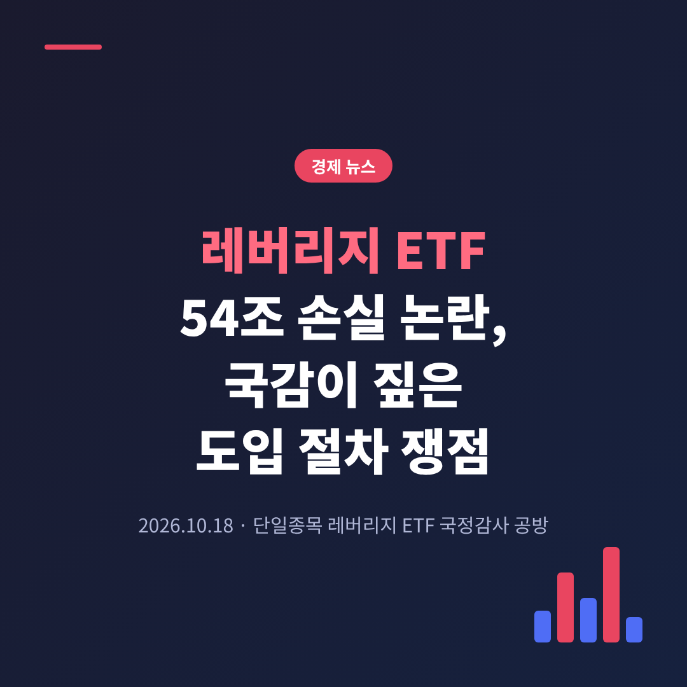
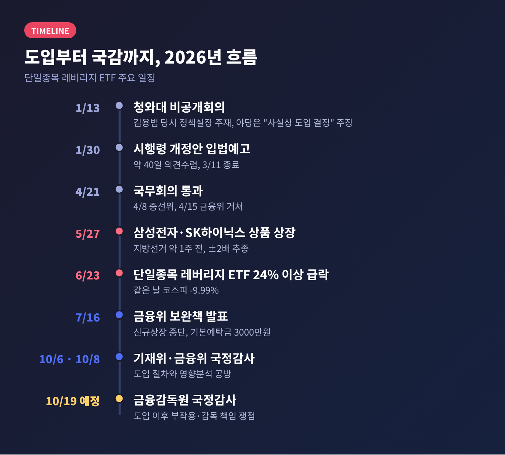
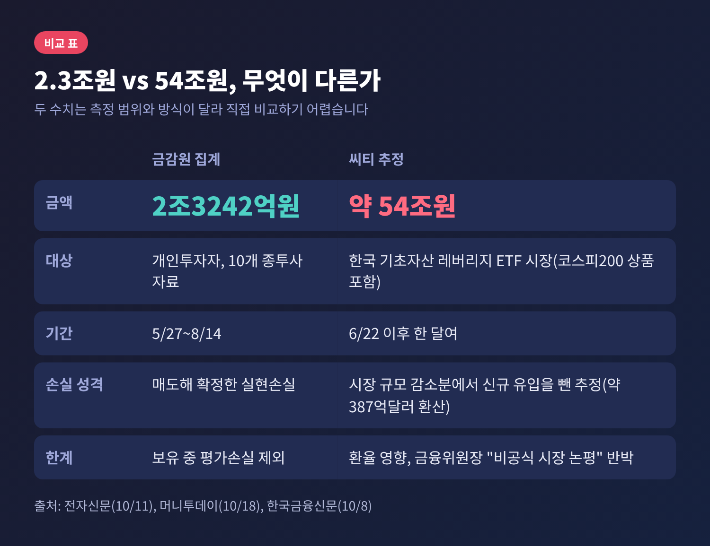
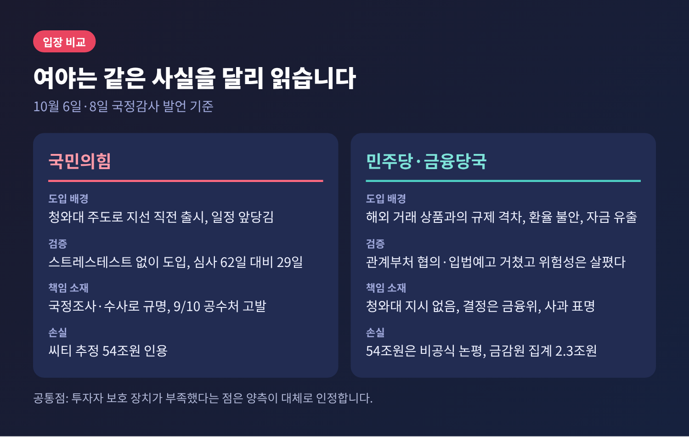
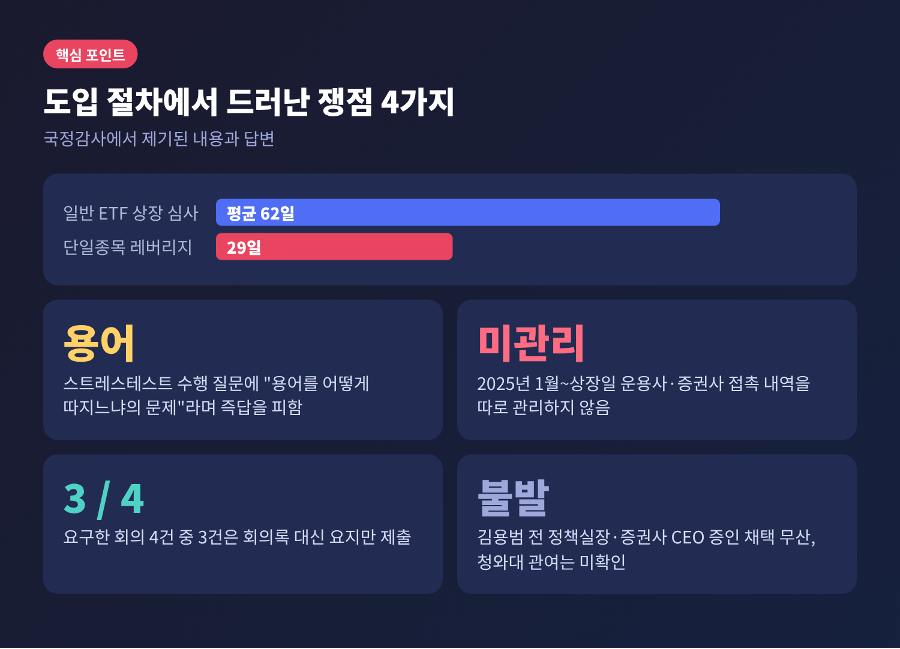
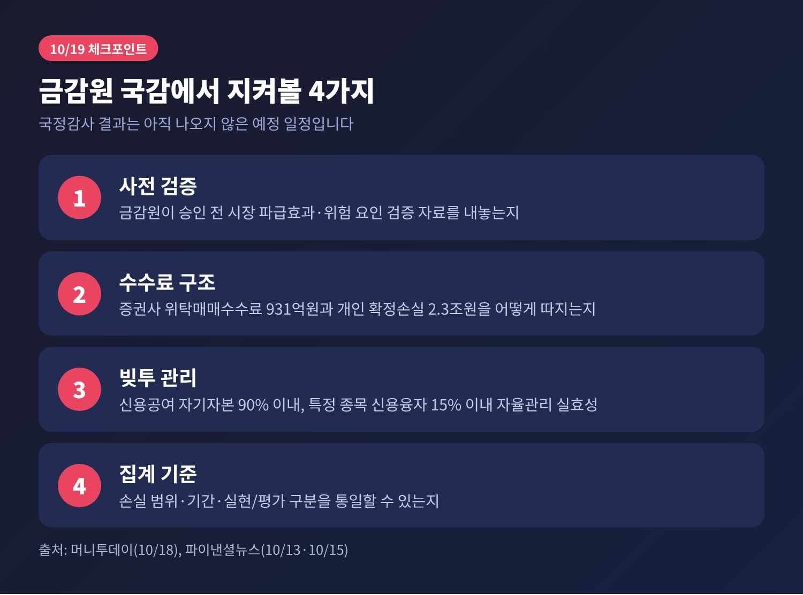

3줄 요약
이번 글에서는 레버리지 ETF 논란이 국감에서 어떻게 전개됐는지, 특히 도입 절차와 사전 영향분석을 둘러싼 공방을 정리해 보겠습니다. 여야 양측 주장을 함께 놓고, 남은 쟁점과 앞으로의 일정까지 살펴봅니다.
문제가 된 상품은 삼성전자와 SK하이닉스 등을 기초로 하루 수익률의 2배를 좇는 단일종목 레버리지·인버스 ETF입니다. 그동안 국내에서는 금지되어 있었고, 미국과 홍콩에 상장된 상품으로만 거래할 수 있었습니다.
금융위원회는 1월 30일 시행령 개정안을 입법예고했습니다. 4월 21일 국무회의를 통과했고, 5월 27일 상품이 상장되었습니다. 지방선거를 약 일주일 앞둔 시점이었습니다.
상장 한 달 뒤인 6월 23일, 주요 단일종목 레버리지 ETF는 하루에 24% 이상 급락했습니다. 같은 날 코스피는 9.99% 내렸습니다. 당시 16개 상품의 순자산은 12조5176억원에 이르렀습니다.

예전에는 "해외로 나가는 개인 자금을 국내에 붙들 방법"이라는 기대가 컸습니다. 지금은 "무엇을 검증하고 허용했는가"를 묻는 단계로 넘어왔습니다.
금융위는 7월 16일 보완책을 내놓았습니다. 신규 상장 중단과 광고 금지를 즉시 적용했고, 기본예탁금을 1000만원에서 3000만원(현금)으로 올렸습니다. 매매 단위는 1주에서 20주로 바꾸기로 했으며, 전산 작업이 끝나는 11월경 적용될 예정입니다.
이 사안은 한 상품의 성패에 그치지 않습니다. 규제를 풀 때 어떤 검증을 거쳐야 하는지를 묻기 때문입니다.
금감원이 국회에 낸 자료에 따르면, 5월 27일부터 8월 14일까지 개인투자자가 10개 종합금융투자사업자에서 매도해 확정한 손실은 2조3242억원입니다. 이 숫자에는 아직 보유 중인 평가손실이 들어 있지 않습니다.
반면 증권사는 위탁매매수수료로 931억원을 벌었다는 자료도 나왔습니다. 16개 종목이 상장된 이후 7월 말까지의 금액입니다. 개인은 손실을 보고 증권사는 수수료를 챙겼다는 비판이 나오는 이유입니다.
시장 전체에도 영향이 이어졌습니다. 신용거래융자 잔액은 10월 15일 기준 32조7498억원입니다. 변동성이 커진 장에서 빚을 내 투자한 규모가 여전히 큽니다.
국감장에서 가장 많이 오간 숫자는 54조원입니다. 야당은 이 숫자를 근거로 책임을 물었고, 금융위원장은 "정확하지 않다"고 맞섰습니다.

전자신문 분석을 보면 두 수치의 성격이 다릅니다. 금감원은 개인이 팔아서 확정한 실현손실만 셌습니다. 씨티는 한국 기초자산 레버리지 ETF 시장 규모가 약 525억달러에서 약 190억달러로 줄어든 폭에서 신규 자금 유입을 뺀 추정치를 냈습니다. 달러 기준이라 환율에 따라 달라지고, 코스피200 상품도 포함된 것으로 알려졌습니다.
이억원 금융위원장은 씨티 자료를 "트레이딩 부문의 비공식 시장 논평"이라고 설명했습니다. 뉴데일리에 따르면 국감에서 54조원의 산출 근거가 공개되지는 않았습니다.
정리하면 이렇습니다. 2조3242억원은 범위를 좁게 잡은 확정손실이고, 54조원은 범위가 넓은 추정치입니다. 어느 쪽도 "투자자 피해 전체"를 정확히 보여 준다고 단정하기는 어렵습니다.
공방은 크게 세 갈래로 나뉩니다.
첫째는 심사 기간입니다. 박성훈 국민의힘 의원에 따르면 일반 ETF 상장 심사는 평균 62일이 걸렸지만, 이 상품은 29일이었습니다. 이억원 위원장은 지수 ETF와 달리 구조가 단순하지 않다는 분석이 있다고만 답했습니다.
둘째는 사전 검증입니다. 박 의원은 스트레스테스트 없이 도입했다고 주장했습니다. 위원장은 "스트레스테스트라는 용어를 어떻게 따지느냐의 문제"라며 위험성과 시장 영향은 살폈다고 답했습니다. 이 답변에서 공식적인 사전 영향분석 결과가 제시되었다는 보도는 확인되지 않습니다.
셋째는 기록입니다. 금융위는 2025년 1월부터 상장일까지 자산운용사·증권사 접촉 내역을 따로 관리하지 않는다고 밝혔습니다. 국회가 요구한 회의 4건 가운데 3건은 회의록 대신 요지만 제출되었습니다. 이 때문에 도입 결정 과정은 자료만으로는 확인하기 어려운 상태입니다.

여야의 시선은 같은 사실을 서로 다르게 읽습니다.

국민의힘은 1월 13일 청와대 비공개회의에서 사실상 도입이 정해졌고, 일정도 하반기에서 2분기로 앞당겨졌다고 봅니다. 박준태 의원은 도입 경위를 국정조사나 수사로 규명해야 한다고 했습니다. 9월 10일에는 나경원·김태규·윤용근 의원 등이 이억원 금융위원장, 이찬진 금감원장, 김용범 전 정책실장을 공수처에 고발했습니다. 다만 고발장의 혐의는 고발인의 주장이며 수사를 통해 확인되어야 합니다.
더불어민주당과 금융당국의 설명은 다릅니다. 전현희 의원은 이미 해외에서 거래되던 상품이어서 국내 도입이 불가피한 측면이 있었다고 봤습니다. 쟁점은 투자자 보호 장치를 처음부터 치밀하게 준비했느냐이며, 누가 결정했느냐를 따지는 것은 "정쟁을 위한 정쟁"이라는 입장입니다. 이억원 위원장은 청와대 지시는 없었고, 입법예고와 관계부처 협의를 거쳤다고 답했습니다.
눈여겨볼 대목은 양측 모두 "투자자 보호가 부족했다"는 데는 상당 부분 겹친다는 점입니다. 위원장도 상품의 필요성은 있었지만 출시 시기와 투자자 보호를 더 면밀히 살폈어야 했다고 인정했고, 진심으로 송구하다고 사과했습니다. 이찬진 금감원장도 6월 "급하게 준비했던 것은 맞다"고 말했습니다.
시장 감시도 여야가 함께 짚은 부분입니다. 김현정 민주당 의원에 따르면 고빈도 매매(HFT) 월평균 거래대금은 상장 전 약 2700조원에서 상장 후 약 4200조원으로 52% 늘었습니다. 위원장은 상시 모니터링하고 위법이 발견되면 즉시 대응하겠다고 답했습니다.
머니투데이에 따르면 금융위 국감에서는 정책 도입의 책임이, 10월 19일 금감원 국감에서는 도입 이후의 부작용이 주로 다뤄질 전망입니다. 야당은 금감원이 상품 승인 전에 시장 파급효과와 위험 요인을 충분히 검증했는지 물을 예정입니다. 출시 한 달 만에 제도를 손본 이유도 질의 대상입니다.

지켜볼 대목은 네 가지입니다.
제도 개선 논의도 이어지고 있습니다. 금융위와 금감원은 8월 자본시장법 개정을 통해 변동성이 클 때 레버리지 배율을 일시적으로 낮추는 방안을 추진하는 것으로 보도되었습니다. 현재는 배율을 바꾸려면 수익자총회 결의가 필요해 신속한 대응이 어렵기 때문입니다. 다만 개정 여부와 시점은 확인되지 않았습니다. 이번 국감 결과도 아직 나오지 않은 미래 일정입니다.
한계도 분명합니다. 청와대 관여 여부는 핵심 증인이 채택되지 않아 국감에서 확인되지 않았고, 54조원의 정확성은 여전히 논쟁 중입니다. 확인된 사실과 주장을 구분해서 읽으시길 권합니다.
끝으로 한 마디만 더 드리겠습니다.
레버리지 ETF 논란이 남긴 질문은 "누가 결정했는가"만이 아닙니다. 규제를 풀 때 어떤 검증을 거치고, 그 기록을 어떻게 남기느냐도 함께 묻고 있습니다.
"허용의 속도보다 검증의 흔적이 중요하다."
이 숫자 공방이 끝난 뒤에도 투자자가 기댈 수 있는 것은 결국 기록으로 남은 절차일 것입니다.
참고 보도: 머니투데이(10/18), 전자신문(10/11), 뉴스핌(10/9), 한국일보(10/14), 아시아경제(10/8), 아이뉴스24(10/8), 한국금융신문(10/8), 뉴데일리(10/6), 세계일보(6/24, 10/11), 뉴시스(7/16), 뉴스토마토(9/10) 등